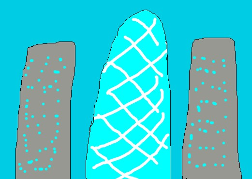
展示作品
{kind=link}
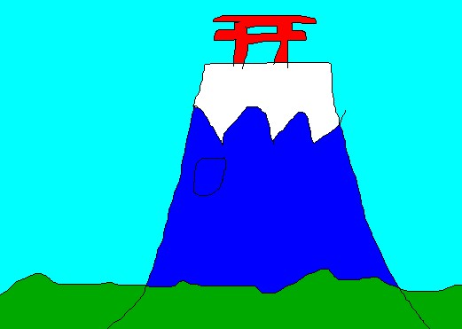
富士山
{kind=link}
のUnity版「画伯の展覧会」で使った絵 「羊蹄山」")
羊蹄山
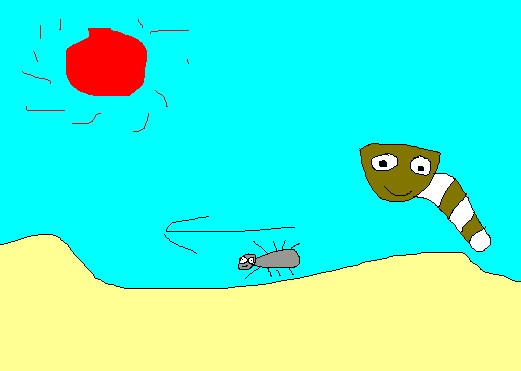
サハラ砂漠
{kind=link}
のUnity版「画伯の展覧会」で使った絵 「東京大学」")
東京大学
のUnity版「画伯の展覧会」で使った絵 「大はしあたけの夕立」")
大はしあたけの夕立
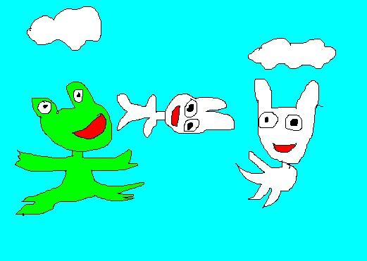
鳥獣戯画
{kind=link}
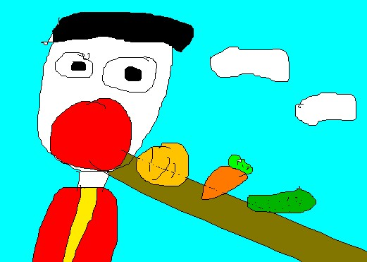
ガルガンチュア
{kind=link}
のUnity版「画伯の展覧会」で使った絵 「最後の晩餐」")
最後の晩餐
のUnity版「画伯の展覧会」で使った絵 「鮭(絵画)」")
鮭(絵画)
{kind=link}
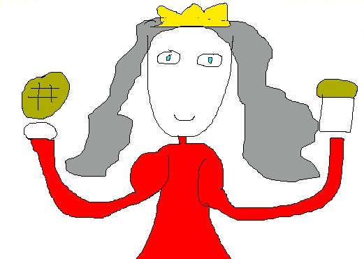
マリーアントワネット
{kind=link}
のUnity版「画伯の展覧会」で使った絵 「武田信玄」")
武田信玄
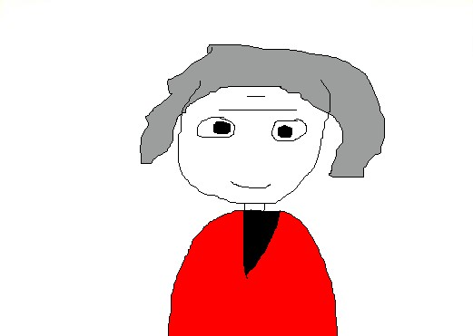
マルクス
{kind=link}
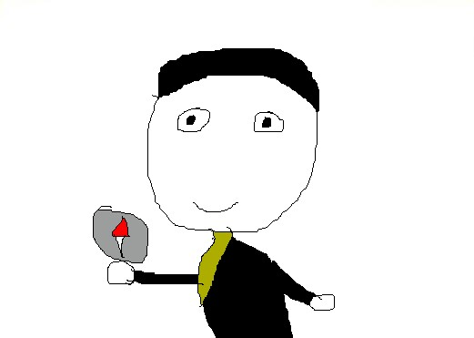
コロンブス
{kind=link}
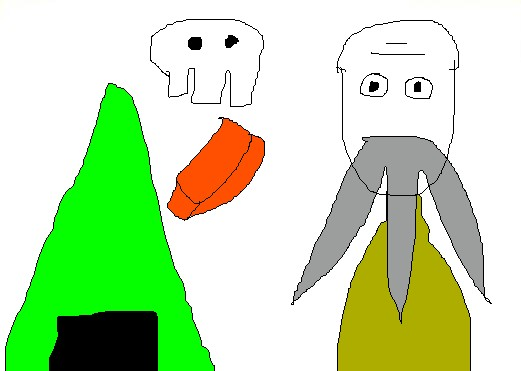
田中正造
{kind=link}
のUnity版「画伯の展覧会」で使った絵 「太宰治」")
太宰治
のUnity版「画伯の展覧会」で使った絵 「トラ」")
トラ
のUnity版「画伯の展覧会」で使った絵 「鮭」")
鮭
のUnity版「画伯の展覧会」で使った絵 「パンダ」")
パンダ
のUnity版「画伯の展覧会」で使った絵 「馬」")
馬
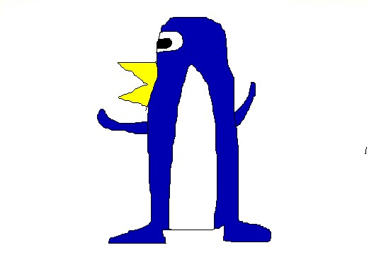
ペンギン
{kind=link}
のUnity版「画伯の展覧会」で使った絵 「織田信長」")
織田信長
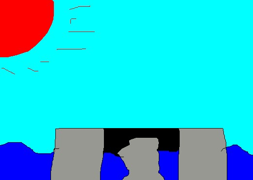
沖ノ鳥島
{kind=link}
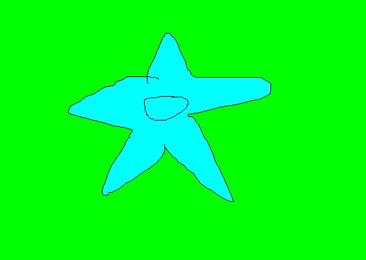
五稜郭
{kind=link}
武田信玄
のUnity版「画伯の展覧会」で使った絵 「老いたギター弾き」")
老いたギター弾き
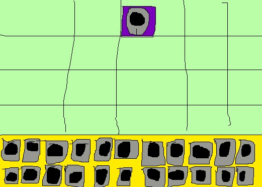
大政奉還
{kind=link}
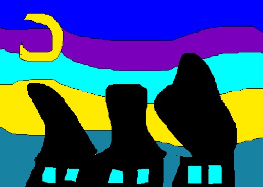
星月夜
{kind=link}
のUnity版「画伯の展覧会」で使った絵 「清少納言」")
清少納言
のUnity版「画伯の展覧会」で使った絵 「紫式部」")
紫式部
のUnity版「画伯の展覧会」で使った絵 「渋沢栄一」")
渋沢栄一
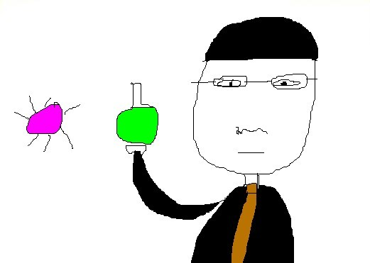
北里柴三郎
{kind=link}
詳細
ここでの画伯の意味は？
絵がめちゃくちゃ下手な人を指します。
ただ、下手というだけではなく、面白さも兼ね備えている必要があります。
例えば、「アメトーーク」の「絵心ない芸人」のような人です。
Unity版の「画伯の展覧会」ってどんなの？
地震でめちゃくちゃになった美術館を修復するゲームです。(全9ステージ)
ここに掲載してある下手な絵を、正しいタイトルの場所に設置します。
最小人数(3人)で制作しましたが、他の8グループ(4～7人)に勝って、相互評価1位でした。
Unity版の「画伯の展覧会」は公開しないの？
Unityにログインできなくなったのと、他人の名前が入っているので公開できません。
あと、バグ修正ができてないし。
なんか適当に一言
なにか、「この絵を絵心ない人に書いて欲しい！」といった要望がありましたら、Twitter上に書いてください。
リンクは、ページの一番上に貼ってあります。
もっと一言
明日ライブ